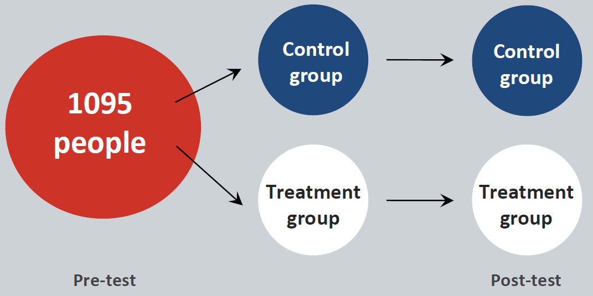

Experiments and Causal Inference
Advanced applied statistics, 2015
Erik Gahner Larsen
Experiments in political science research

"Like it or not, social scientists rely on the logic of experimentation even when analyzing nonexperimental data." (Green and Gerber 2003, 110)
"In some sense every empirical researcher is reporting the results of an experiment. Every researcher who behaves as if an exogenous variable varies independently of an error term effectively views their data as coming from an experiment." (Harrison and List 2004, 1009)
"[T]here is no reason to suppose that case study research follows a divergent logic of inquiry relative to experimental research." (Gerring and McDermott 2007, 689)
"If you can't devise an experiment that answers your question in a world where anything goes, then the odds of generating useful results with a modest budget and nonexperimental survey data seem pretty slim. The description of an ideal experiment also helps you formulate causal questions precisely." (Angrist and Pischke 2009, 5)
Agenda
Causal effects
Experiments and assumptions
Issues in experimental research
Types of experiments
Example: The effect of facebook use on life satisfaction
How would we test this in an observational setting?
What is the problem?
What is it all about?
We need strong designs in order to make causal inferences
- Remember: Science is all about causality
The issue it not the data we have ... but the data we do not have.
"Easy" to measure the factual world
- What about the counterfactual world?
We need theoretical and statistical tools to make valid counterfactuals
- From estimation strategies (statistics) to identification strategies (design):
- "Without an experiment, a natural experiment, a discontinuity, or some other strong design, no amount of econometric or statistical modeling can make the move from correlation to causation persuasive." (Sekhon 2009, 503)
Neyman-Rubin causal model
We are interested in potential outcomes to define causal effects
For individual i, we have a potential outcome: \(Y_{i}\)
Treatment: \(W_{i}\)
Potential outcome given treatment treatment status: \(Y_{i}(W_{i})\)
Two potential outcomes: \(Y_{i}(1), Y_{i}(0)\)
Unit causal effect: The difference between a unit's potential outcome under treatment and the unit's potential outcome under control.
\(\tau_{i} = Y_{i}(1) - Y_{i}(0)\)
Example: facebook and life satisfaction
| User i | \(Y_{i}(0)\) (no facebook) |
|---|---|
| 1 | 60 |
| 2 | 20 |
| 3 | 80 |
| 4 | 30 |
| 5 | 40 |
| 6 | 75 |
| 7 | 40 |
| 8 | 20 |
| 9 | 60 |
| 10 | 75 |
| Average | 50 |
Example: facebook and life satisfaction
| User i | \(Y_{i}(0)\) (no facebook) | \(Y_{i}(1)\) (facebook) |
|---|---|---|
| 1 | 60 | 70 |
| 2 | 20 | 50 |
| 3 | 80 | 80 |
| 4 | 30 | 45 |
| 5 | 40 | 50 |
| 6 | 75 | 60 |
| 7 | 40 | 45 |
| 8 | 20 | 30 |
| 9 | 60 | 85 |
| 10 | 75 | 85 |
| Average | 50 | 60 |
Example: facebook and life satisfaction
| User i | \(Y_{i}(0)\) (no facebook) | \(Y_{i}(1)\) (facebook) | \(\tau_{i}\) |
|---|---|---|---|
| 1 | 60 | 70 | 10 |
| 2 | 20 | 50 | 30 |
| 3 | 80 | 80 | 0 |
| 4 | 30 | 45 | 15 |
| 5 | 40 | 50 | 10 |
| 6 | 75 | 60 | -15 |
| 7 | 40 | 45 | 5 |
| 8 | 20 | 30 | 10 |
| 9 | 60 | 85 | 25 |
| 10 | 75 | 85 | 10 |
| Average | 50 | 60 | 10 |
FPCI
The Fundamental Problem of Causal Inference (FPCI)
The Fundamental Problem of Causal Inference (FPCI)
"It is impossible to observe the value of \(Y_{i}(1)\) and \(Y_{i}(0)\) on the same unit and, therefore, it is impossible to observe the effect of \(W_{i}\) on \(i\)." (Holland 1986, 947)
We observe one outcome: the realised outcome
\(R_{i} = W_{i}Y_{i}(1) + (1-W_{i})Y_{i}(0)\)
Example: facebook and life satisfaction
| User i | \(Y_{i}(0)\) | \(Y_{i}(1)\) | \(W_{i}\) |
|---|---|---|---|
| 1 | 60 | ? | 0 |
| 2 | ? | 50 | 1 |
| 3 | 80 | ? | 0 |
| 4 | ? | 45 | 1 |
| 5 | 40 | ? | 0 |
| 6 | ? | 60 | 1 |
| 7 | ? | 45 | 1 |
| 8 | 20 | ? | 0 |
| 9 | ? | 85 | 1 |
| 10 | 75 | ? | 0 |
Example: facebook and life satisfaction
| User i | \(Y_{i}(0)\) | \(Y_{i}(1)\) | \(W_{i}\) | \(R_{i}\) (observed outcome) |
|---|---|---|---|---|
| 1 | 60 | ? | 0 | 60 |
| 2 | ? | 50 | 1 | 50 |
| 3 | 80 | ? | 0 | 80 |
| 4 | ? | 45 | 1 | 45 |
| 5 | 40 | ? | 0 | 40 |
| 6 | ? | 60 | 1 | 60 |
| 7 | ? | 45 | 1 | 45 |
| 8 | 20 | ? | 0 | 20 |
| 9 | ? | 85 | 1 | 85 |
| 10 | 75 | ? | 0 | 75 |
So, you cannot prove causality with statistics?
Well, you can only prove causality with statistics.
(Rosenbaum 2010, 35)
The FPCI is a missing data problem. What is the solution?
Random assignment

Random assignment
Create two groups of observations that are, in expectation, identical prior to application of the treatment (Green and Gerber 2012, 31)
Create a counterfactual group.
Guarantees that the treatment is prior to the outcome, avoiding posttreatment and simultaneity biases.
\(P(W)\) = 0.5 (coin flip)
Assumption I: Ignorability of Treatment Assignment
Pretreatment covariates, \(X\)
Unconfoundedness \((Y(1),Y(0),X) \perp W\)
What about \((Y(1),Y(0)) \perp W|X\)?
- We will address this issue next week
Average treatment effect
What most scholars are interested in
Average treatment effect: \(\tau_{ATE} = E[Y(1) - Y(0)] = E[Y(1)] - E[Y(0)]\)
Assumption II: Stable Unit Treatment Value Assumption (SUTVA)
A collection of implied assumptions about the effect of treatments on individuals
"The potential outcomes for any unit do not vary with the treatments assigned to other units, and, for each unit, there are no different forms or versions of each treatment level, which lead to different potential outcomes." (Imbens and Rubin 2015, 10)
Assumption II: Stable Unit Treatment Value Assumption (SUTVA)
- Noninterference: Potential outcomes for unit i depend only on the treatment assignment of unit i (no interference or spillover effect):
\((Y(1),Y(0)) \perp W_{j}, \forall i \neq j\)
- Exclusion restriction: Only one version of each treatment possible for each unit
Assumption II: Stable Unit Treatment Value Assumption (SUTVA)
Two implications (from Heckman 2005, 11):
Rules out social interactions and general equilibrium effects.
Rules out any effect of the assignment mechanism on potential outcomes.
Assumption III: Compliance
\(W_{i}\) is assignment to treatment
Subjects can - in many cases - decide not to comply
\(D_{i}\): treatment status (1 if treated, 0 if not)
Assumption III: Compliance, always-takers
Always-takers will always be treated
\(W_{i}\) = 1, \(D_{i}\) = 1
\(W_{i}\) = 0, \(D_{i}\) = 1
Facebook example: Will use facebook independent of treatment assignment
Assumption III: Compliance, never-takers
Never-takers will never be treated
\(W_{i}\) = 1, \(D_{i}\) = 0
\(W_{i}\) = 0, \(D_{i}\) = 0
Facebook example: Will not use facebook independent of treatment assignment
Assumption III: Compliance, cooperators
Cooperators will... cooperate
\(W_{i}\) = 1, \(D_{i}\) = 1
\(W_{i}\) = 0, \(D_{i}\) = 0
Facebook example: Will only use facebook if assigned to treatment
Assumption III: Compliance, defiers
Defiers will... do the opposite
\(W_{i}\) = 1, \(D_{i}\) = 0
\(W_{i}\) = 0, \(D_{i}\) = 1
Facebook example: Will use facebook if not assigned to treatment and not use facebook if assigned to treatment
We assume that there are no defiers (monotonicity)
So, which cases inform causal inference?
The cases whose treatment status can be changed (hint: cooperators)
Assumption III: Compliance
How do we know that \(W_{i}\) = 1, \(D_{i}\) = 1 is a cooperator and not an always-taker?
How do we know that \(W_{i}\) = 0, \(D_{i}\) = 0 is a cooperator and not a never-taker?
Assumption III: Compliance
We only have realised outcomes (we need a counterfactual)
Hard to say whether we are dealing with compliance or noncompliance
Remember: Try to measure compliance!
Intention-to-treat
Our effects are often intention-to-treat (ITT) estimates.
Mean difference on Y between subjects assigned to treatment and subjects not assigned to treatment.
Example: Noncompliance with Encouragement \(W_{i}\) to Exercise \(D_{i}\)
From Table 5.5 in Rosenbaum (2002, 182).
Y = forced expiratory volume (higher numbers signifying better lung function)
Will subject exercice with encouragement? (\(d_{i}(1)\))
Will subject exercice without encouragement? (\(d_{i}(0)\))
Example: Noncompliance with Encouragement \(W_{i}\) to Exercise \(D_{i}\)
| User i | \(d_{i}(1)\) | \(d_{i}(0)\) |
|---|---|---|
| 1 | 1 | 1 |
| 2 | 1 | 1 |
| 3 | 1 | 0 |
| 4 | 1 | 0 |
| 5 | 1 | 0 |
| 6 | 1 | 0 |
| 7 | 1 | 0 |
| 8 | 1 | 0 |
| 9 | 0 | 0 |
| 10 | 0 | 0 |
What are the potential outcomes?
Example: Noncompliance with Encouragement \(W_{i}\) to Exercise \(D_{i}\)
| User i | \(d_{i}(1)\) | \(d_{i}(0)\) | \(Y_{i}(1)\) | \(Y_{i}(0)\) |
|---|---|---|---|---|
| 1 | 1 | 1 | 71 | 71 |
| 2 | 1 | 1 | 68 | 68 |
| 3 | 1 | 0 | 64 | 59 |
| 4 | 1 | 0 | 62 | 57 |
| 5 | 1 | 0 | 59 | 54 |
| 6 | 1 | 0 | 58 | 53 |
| 7 | 1 | 0 | 56 | 51 |
| 8 | 1 | 0 | 56 | 51 |
| 9 | 0 | 0 | 42 | 42 |
| 10 | 0 | 0 | 39 | 39 |
Let's assign some treatments and see the realised outcomes.
Example: Noncompliance with Encouragement \(W_{i}\) to Exercise \(D_{i}\)
| User i | \(d_{i}(1)\) | \(d_{i}(0)\) | \(Y_{i}(1)\) | \(Y_{i}(0)\) | \(W_{i}\) | \(D_{i}\) | \(R_{i}\) |
|---|---|---|---|---|---|---|---|
| 1 | 1 | 1 | 71 | 71 | 1 | 1 | 71 |
| 2 | 1 | 1 | 68 | 68 | 0 | 1 | 68 |
| 3 | 1 | 0 | 64 | 59 | 1 | 1 | 64 |
| 4 | 1 | 0 | 62 | 57 | 0 | 0 | 57 |
| 5 | 1 | 0 | 59 | 54 | 0 | 0 | 54 |
| 6 | 1 | 0 | 57 | 52 | 1 | 1 | 57 |
| 7 | 1 | 0 | 56 | 51 | 1 | 1 | 56 |
| 8 | 1 | 0 | 56 | 51 | 0 | 0 | 51 |
| 9 | 0 | 0 | 42 | 42 | 0 | 0 | 42 |
| 10 | 0 | 0 | 39 | 39 | 1 | 0 | 39 |
Let's create a data frame
di1 <- c(1, 1, 1, 1, 1, 1, 1, 1, 0, 0)
di0 <- c(1, 1, 0, 0, 0, 0 ,0, 0, 0, 0)
Yi1 <- c(71, 68, 64, 62, 59, 57, 56, 56, 42, 39)
Yi0 <- c(71, 68, 59, 57, 54, 52, 51, 51, 42, 39)
Wi <- c(1, 0, 1, 0, 0, 1, 1, 0, 0, 1)
Di <- c(1, 1, 1, 0, 0, 1, 1, 0, 0, 0)
Ri <- c(71, 68, 64, 57, 54, 57, 56, 51, 42, 39)
lung <- data.frame(di1, di0, Yi1, Yi0, Wi, Di, Ri)
What is the (average) causal effect?
mean(
lung[lung$Wi == 1 & lung$di1 - lung$di0 == 1,]$Ri -
lung[lung$Wi == 0 & lung$di1 - lung$di0 == 1,]$Ri
)
## [1] 5
What is the naive average treatment effect?
mean(lung[lung$Di == 1,]$Ri - lung[lung$Di == 0,]$Ri)
## [1] 14.6
summary(lm(Ri~Di, data=lung))
##
## Call:
## lm(formula = Ri ~ Di, data = lung)
##
## Residuals:
## Min 1Q Median 3Q Max
## -9.60 -6.50 1.60 5.25 8.40
##
## Coefficients:
## Estimate Std. Error t value Pr(>|t|)
## (Intercept) 48.600 3.225 15.070 3.72e-07 ***
## Di 14.600 4.561 3.201 0.0126 *
## ---
## Signif. codes: 0 '***' 0.001 '**' 0.01 '*' 0.05 '.' 0.1 ' ' 1
##
## Residual standard error: 7.211 on 8 degrees of freedom
## Multiple R-squared: 0.5616, Adjusted R-squared: 0.5068
## F-statistic: 10.25 on 1 and 8 DF, p-value: 0.01259
Problem
ATE is confounded by endogenous selection into treatment
What is the ITT?
mean(lung[lung$Wi == 1,]$Ri - lung[lung$Wi == 0,]$Ri)
## [1] 3
summary(lm(Ri~Wi, data=lung))
##
## Call:
## lm(formula = Ri ~ Wi, data = lung)
##
## Residuals:
## Min 1Q Median 3Q Max
## -18.4 -2.9 -0.4 5.6 13.6
##
## Coefficients:
## Estimate Std. Error t value Pr(>|t|)
## (Intercept) 54.400 4.812 11.304 3.38e-06 ***
## Wi 3.000 6.806 0.441 0.671
## ---
## Signif. codes: 0 '***' 0.001 '**' 0.01 '*' 0.05 '.' 0.1 ' ' 1
##
## Residual standard error: 10.76 on 8 degrees of freedom
## Multiple R-squared: 0.02371, Adjusted R-squared: -0.09832
## F-statistic: 0.1943 on 1 and 8 DF, p-value: 0.671
You might say: "Seriously, I can think of a billion cases where all this might be problematic."
Welcome to the social sciences.
Types of experiments
- Lab experiments
- Survey experiments
- Field experiments
- Natural experiments
- Quasi-experiments
Types of designs
(from Blom-Hansen and Serritzlew 2014, 13)
| Experiment | Comparison of experiment and control group | Exogenous or as-if exogenous intervention | Groupings are randomized or as-if randomized | Researcher manipulates intervention |
|---|---|---|---|---|
| Lab | Yes | Yes | Yes | Yes |
| Field | Yes | Yes | Yes | Yes |
| Survey | Yes | Yes | Yes | Yes |
| Natural | Yes | Yes | Yes | No |
| Quasi | Yes | Yes | No | No |
| Observational | Yes | No | No | No |
What type of experiment is the facebook and life satisfaction study?
Facebook and life satisfaction
Lab: Get subjects into the lab, randomize, treatment group use facebook.
Survey: Get subjects to answer a survey, randomize, treatment group see material from facebook.
Field: Get subjects to sign up, randomize, treatment group use facebook.
Natural/quasi: Utilize (as-if) random variation in the access to facebook.
Observational: Ask people about facebook use and life satisfaction :-(
Example: Study design, facebook and life satisfaction

Example: Study effects, facebook and life satisfaction

Example: Study effects, facebook and life satisfaction (0-9)

What if the randomization failed?

What about covariates?
Always report the unadjusted treatment effect: "If an estimated treatment effect is insignificant in the absence of controls, this should clearly shape our interpretation of the effect being estimated" (Dunning 2012, 268)
We use experiments so we don't have to care about covariates: "Yet, the whole point of a natural experiment is that such concerns about confounding should be limited by the research design." (Dunning 2012, 118)
Covariates reduce noise, increases the chance that we reach statistical significance (Mutz 2011, 123f)
Positive view: Variables measured before the variables of interest was determined are generally good controls (Angrist and Pischke 2009, 64ff)
How to conduct an experiment
Remember theory.
Consider -- from a practical perspective -- whether an experiment is feasible
Specify hypothesis/hypotheses prior to the data collection
- Prespecification (if you plan to publish in academic journals: preregister)
- What is your dependent variable?
How to report an experiment
We have specific guidelines for reporting experimental research in political science
See Gerber et al. (2014): Reporting Guidelines for Experimental Research: A Report from the Experimental Research Section Standards Committee. Journal of Experimental Political Science 1(1): 81-98.
What about external validity?
External validity is all about your theory
And remember: "It makes no sense to say that some empirical research is low on internal validity but high on external validity." (Morton and Williams 2010, 275)
Replication, reproduction and transparency
One of the biggest issues with experiments (and all research) today: lack of replications
Novelty bias (especially in political science!)
We need more replications of existing experiments
Sadly, only few examples of direct replications in political science
"Indeed, few experimental literatures have generated repicable interactions between two variables." (Green and Gerber 2012, 310)
Replication, reproduction and transparency
Make sure that your research is reproducible (STATA do-file and/or R scripts)
Share your data
Reproduce and replicate existing studies (great way to "learn science")
Be transparent (what did you do, how did you do it etc.)
Observational research
- Cochran's Basic Advice: "The planner of an observational study should always ask himself the question, 'How would the study be conducted if it were possible to do it by controlled experimentation?'" (from Rosenbaum 2010, 16)
Conclusion: Words to live by
- Think of experiments as observational studies
- Think of observational studies as experiments
Install R and RStudio
Schedule
Today: Experiments
Next: Matching
Lecture 13 and 14: Natural experiments
- Regression-Discontinuity Designs
- Instrumental Variable Regression
Lab session 6 and 7: R and matching